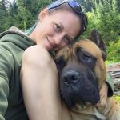

About Me

I am a Full Stack Web Developer with a keen interest in UI/UX, recently graduating from the University of Washington’s Web Development Bootcamp. I have worked in the medical and recreational cannabis industry since 2016. I owned my own recreational grow from 2017-2018. Before that I worked in the restaurant industry for 10 or so years, and worked administrative positions in a couple of different places. In late 2018, life happened and I became a stay home mom. Coming from these industries and positions, I have team management experience, customer service skills, meticulous attention to detail, and creative problem solving skills.. I am driven, an ambitious fortune thinker that learns and evolves quickly and will be an asset to your team. Now armed with skills in mobile first web design, HTML, CSS, JavaScript, Node.js, and jQuery, I am ready to utilize all of my skills in an exciting new Web Development position.